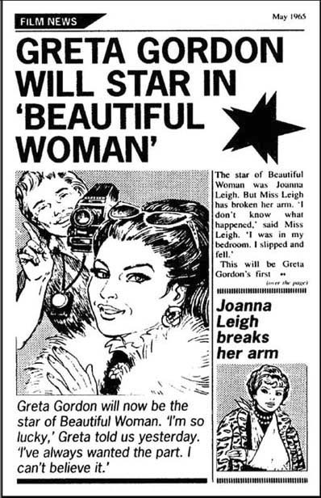

5
Listen to Part 1:

Một trang trong tờ 'Tin tức phim'
Dave không bao giờ nói về Greta Gordon. Anh ta không bao giờ kể về chuyến viếng thăm của cô ấy tới Cửa hiệu The Corner. Một ngày nọ, Anna hỏi anh ta về ngôi sao điện ảnh.
Anna nói: 'Làm sao mà anh quen được Greta Gordon?' 'Cô ấy có phải là bạn của anh không?'
Dave đáp: 'Anh không muốn nói về cô ấy.' 'Cô ấy là khách hàng đặt hàng đặc biệt. Đừng hỏi thêm bất kỳ câu nào về cô ấy nữa, Anna.'
Thế là Anna không hỏi thêm bất kỳ câu nào nữa. Cô ấy không hỏi về đơn đặt hàng đặc biệt của Greta Gordon và cô ấy cũng không hỏi về những chiếc nhẫn. Anna giữ lời hứa. Cô ấy không bao giờ kể với bất kỳ ai về ngôi sao điện ảnh.
Không bao lâu sau thì tới mùa xuân. Anna và Dave rất bận rộn. Ông Hart mang rất nhiều hoa đến Cửa hiệu The Corner và Anna bán chúng cho khách du lịch. Năm đó có rất nhiều khách du lịch.
Vào tháng 5, Peter ngỏ lời cầu hôn Anna. Cô ấy đồng ý. Họ đã đính hôn. Họ lên kế hoạch sẽ kết hôn vào năm sau. Bây giờ họ cần tiền nên họ làm việc chăm chỉ và tiết kiệm. Họ rất yêu nhau.
Vào thứ Bảy, Peter chơi bóng đá hoặc cricket, còn Anna thường tới rạp chiếu phim ở Lidney. Anh ấy thích thể thao và cô ấy thích xem phim.
Một hôm, Anna đang đọc Tin tức phim. Đây là một tạp chí về những ngôi sao điện ảnh. Cô ấy lật mở các trang tạp chí. Có một bức ảnh của Greta Gordon!

Listen to Part 2:
Anna rất vui. Thật là một điều bất ngờ! Người phụ nữ xinh đẹp sẽ là một bộ phim lớn. Và giờ đây, Greta Gordon được giao đóng vai chính.
Anna muốn kể cho Peter về Greta, nhưng cô ấy giữ lời hứa. Cô ấy không kể cho bất kỳ ai.
Nhưng cô ấy đã đưa cho Dave Slatin xem Tin tức phim.
Cô ấy nói: 'Anh Dave này, 'Đây là một bài báo về Greta Gordon. Tuyệt lắm, phải không! Cô ấy được giao vai chính trong Người phụ nữ xinh đẹp.'
Dave nhìn vào tờ tạp chí.
Anh ấy nói: 'Anh không biết gì về phim cả.' 'Greta Gordon có phải là một ngôi sao lớn không?'
Anna bật cười. 'Ngôi sao lớn? Đúng rồi! Cô ấy thật tuyệt!'
Dave có vẻ không hứng thú. Anh ấy nói: 'Tôi hy vọng cô ấy hạnh phúc với vai diễn này của mình.'
Mục lục
- Bìa
- Trang tiêu đề
- Trang bản quyền
- Mục lục
- Nhân vật trong truyện
- 1. Người lạ ở Woodend
- 2. Cuộc họp làng
- 3. Cửa hàng góc phố
- 4. Vị khách xinh đẹp
- 5. Một trang trong ‘Tin tức phim ảnh’
- 6. Nụ hôn vội
- 7. Một đơn đặt hàng đặc biệt nữa
- 8. Trận bóng đá
- 9. Cuối tuần bí mật
- 10. Cuộc cãi vã
- 11. Arthur Riseman
- 12. Anna chờ đợi tin tức
- 13. Phòng đặt hàng đặc biệt
- 14. Khách hàng đặc biệt
- 15. Ngày 31 tháng 10
- Các điểm cần hiểu